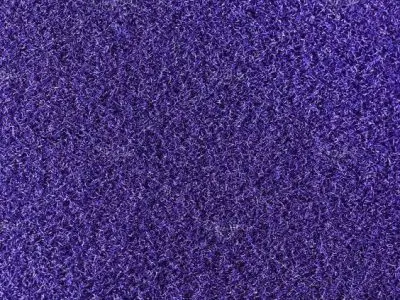
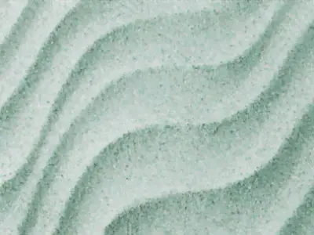
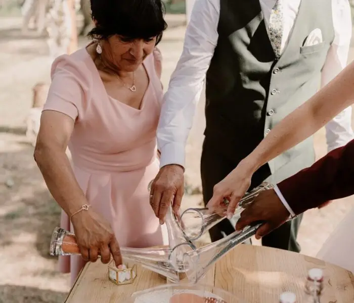

Today we're talking about a symbolic ceremony ritual, and more specifically the sand ritual. It is a much-loved ritual around the world, yet few people really know its symbolism and origins. So today I'm here to shed some light and tell you a little more about this beautiful ritual.
What is the sand ritual?
The sand ritual is a tradition rich in symbolism that is often included in wedding ceremonies. During the ritual, the couple blend grains of sand of different colours in a shared vessel, usually a vase or an urn. Each colour of sand represents a unique aspect of the couple's lives, and blending the sands symbolises the union of their lives and their families.
Its history and origins
The sand ritual has its origins in Hawaiian culture, in that beautiful archipelago where the vast majority of weddings are celebrated on the beach (and frankly, who can blame them, the beaches there are truly breathtaking). Custom has it that the couple take sand from beneath their feet on the beach where they were married and then pour it together into a single vase to symbolise their union. The tradition has since evolved slightly so it can be adapted to symbolic ceremonies, because sadly it isn't always possible to get married on a beach. Today we also find several colours of sand, each standing for a character trait or simply a person. We'll come back to that later; first, let's explore the symbolism of this ritual in more detail.


The symbolism behind the ritual
Every aspect of the sand ritual is full of symbolism, offering couples a meaningful way to celebrate their love and mutual commitment.
Each grain of sand represents a unique facet of the couple's lives. The different colours can symbolise their individual journeys, their distinct personalities, their families, their friends and their past experiences. By blending the grains of sand, the couple merge their lives to form a whole new landscape. This symbolises their commitment to share every aspect of their lives, including the joys, challenges and triumphs to come.
Once blended, the grains of sand can never be separated, just as the two partners can never be pulled apart. This underlines the indivisibility of their bond and their commitment to stay united for ever.
Which sand colours should you choose for your ritual?

White sand
White sand symbolises purity, innocence and clarity. It represents the start of a new life together, free of any past or burden. By pouring white sand, you express your commitment to begin a new chapter of your story, full of hope and promise.

Red sand
Red sand is often associated with passion, ardent love and romance. It represents the flame burning between the two partners and the depth of their feelings. By adding red sand, you affirm your commitment to nurture and keep that passion alive throughout your marriage.

Blue sand
Blue sand evokes trust, serenity and stability. It embodies the depth of the oceans, representing the calm and peace the couple find in their relationship. By pouring blue sand, you express your commitment to support each other through the storms and calms of your life.

Yellow sand
Yellow sand is often associated with joy, energy and optimism. It illustrates the light that brightens the couple's life, bringing warmth and happiness to your union. By pouring yellow sand, you express your commitment to choose joy and happiness in your relationship, even in the face of challenges and difficulties.

Purple sand
Purple sand is often associated with spirituality and creativity. It represents the depth of the couple's emotions and aspirations, as well as your commitment to support each other in your personal growth. By adding purple sand, you express your wish to share your inspirations and your spiritual journey.

Green sand
Green sand is often associated with growth, fertility and renewal. It represents the evolution and development of your relationship as a married couple, and your commitment to nurture your love and flourish together. By adding green sand, you express the wish to see your love grow and thrive over time.
A ritual for two or more…
The ritual for two
In a ritual for two, only the couple take part, adding their grains of sand to the shared vessel.
This creates an intimate, personal moment between the two of you, symbolising your mutual commitment and your union as a couple. A ritual for two puts the focus on the central relationship between the couple and strengthens their commitment to each other.
During the ceremony, you will each take a container of sand and pour its contents together (or in turns, little by little) into the shared vase. The two sands will then blend inseparably, while each keeps its own colour.

The ritual with your children
The ritual with your children symbolises the creation of your family, its strength and its unity. It also shows that you, as parents, will always be there for your children, from the beginning (the sand at the bottom) to the end (the sand on top). Alongside the couple, each child will have a sand of a different colour.
In this version, the couple start by pouring part of their sand, then each child adds theirs, and the couple finish by pouring the rest of their own.
The ritual with parents and grandparents
The ritual with your parents and grandparents shows the union of your two families and the special role each generation of your family has played in your lives!
Each family member will have a sand of a different colour and will pour it in turn, from the oldest generation to the youngest.


The ritual with your loved ones
You can also choose to involve your witnesses, brothers and sisters and/or closest friends. This way you show all your loved ones the impact they have had on your life and what they mean to you.
If finding a colour for each participant becomes complicated, you can assign one colour per group: one for brothers and sisters, one for cousins, one for close friends, and so on.
When should you include the ritual in your ceremony?
The sand ritual can be performed right after your exchange of vows and rings. This lets you seal your mutual commitment by adding your grains of sand to the shared vessel, symbolising the union of your lives. For me it's the ideal moment, but of course you can hold it at any point in your ceremony, depending on your preferences and the overall flow. Whatever moment you choose, what matters is that the ritual is woven in in a meaningful, thoughtful way, adding a special touch to your wedding day.
If organising the ceremony is likely to be stressful because you want to be sure everything is perfect, don't hesitate to call on my services as a wedding day coordinator.
To conclude, the sand ritual offers you a beautiful, meaningful way to celebrate your love and commitment at your wedding. By blending grains of sand of different colours, the couple symbolise the union of their lives and the creation of a new landscape together. Whether or not you choose to include this tradition in your ceremony, its powerful symbolism endures, a reminder of the importance of love and unity on the journey of marriage.
A little bonus
If you don't have an officiant for your wedding, here is a sample speech that your witnesses, family or friends can read for your ritual:
Dear friends, family and loved ones,
Today we are gathered to celebrate a unique and sacred moment: the union of two souls who commit to walking life's path together. As [Partner's name] and [Partner's name] prepare to exchange their vows and seal their love, we are witnessing a deeply symbolic act: the sand ritual.
This ritual, steeped in tradition and meaning, reminds us of the beauty and strength of shared love. Through this simple yet powerful gesture, [Partner's name] and [Partner's name] will blend grains of sand of different colours, symbolising the union of their lives and the creation of a new landscape together.
Each grain of sand represents a unique story, a personal journey, a precious experience. The different colours evoke the shades of their personalities, the richness of their families and the shared moments that have shaped their love. And today, on their wedding day, these grains of sand merge into one, uniting [Partner's name] and [Partner's name] in a promise of eternal love.
Just as sand can never be separated once blended, so it is with your love. May this symbolic gesture always remind your hearts that you are indivisible, united in your joys and sorrows, in your dreams and achievements. May these grains of sand, sealed for ever in this vessel, be the tangible symbol of your eternal commitment to each other.
As family and friends, we add our own grains of sand to this blend, bearing witness to our support and unwavering love for you both. May our presence today testify to our commitment to support you, encourage you and love you throughout your life together.
[Partner's name] and [Partner's name], as you prepare to exchange your vows and commit to each other, may the sand ritual stay engraved in your hearts as a symbol of your deep love and sacred union. May every grain of sand be the silent witness of your eternal love, your unshakeable strength and your infinite happiness.
With all our love and admiration,
[Name of the person giving the speech]"